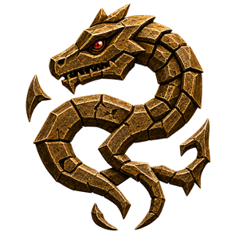
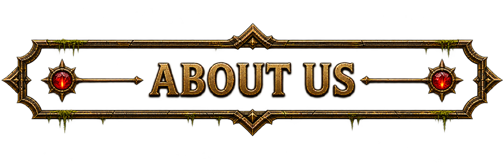
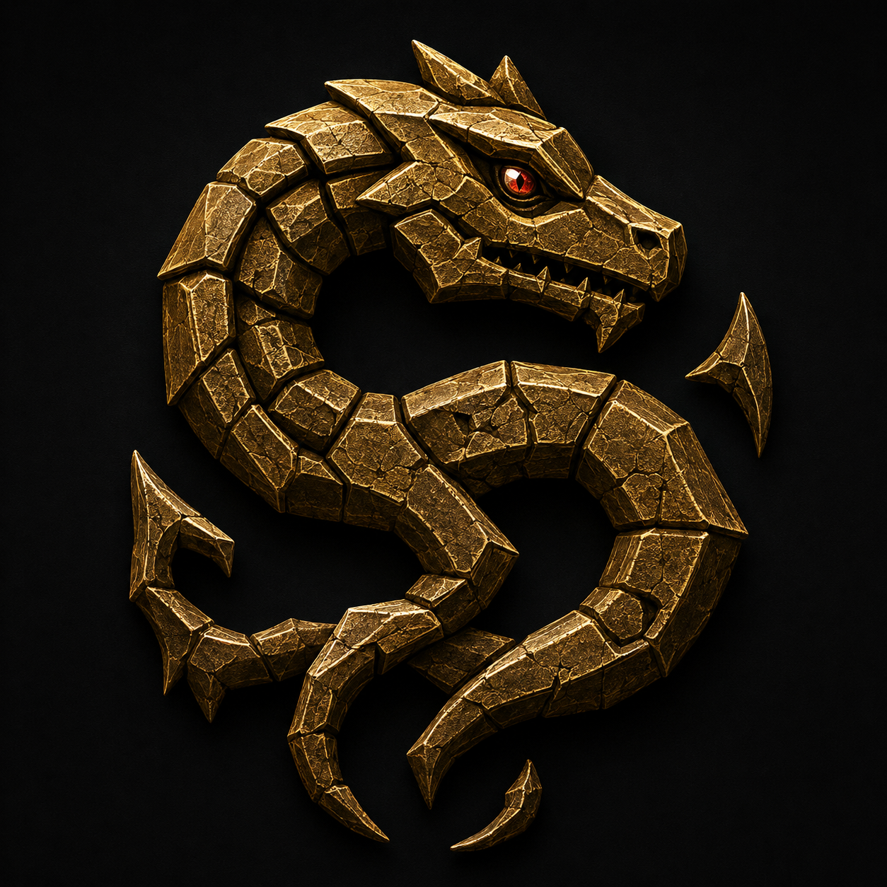
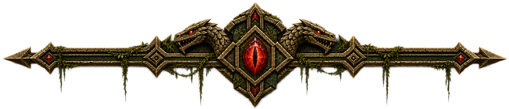

The Community We Want to Build
More than anything else, we want Old Sebilis to be known as a guild that people genuinely enjoy being part of.
Our recent giveaway event is a perfect example of the atmosphere we'd like to cultivate. Members donated gear simply because they wanted to help others. People stayed for hours, chatted, laughed, and celebrated each other's upgrades.
That is exactly the kind of community we want to continue building.
We want to be a guild where helping each other is the norm. That means:
- Forming guild groups whenever possible
- Helping with corpse recoveries
- Sharing named camps or working together instead of competing whenever possible
- Sharing tradeskill knowledge and materials
- Assisting with quests via physical help or knowledge
- Passing along gear you no longer need
- Celebrating each other's successes
- Welcoming new members and making them feel at home
Not every interaction has to benefit you directly. Sometimes the strongest communities are built through small acts of generosity that come back around later.
Our goal isn't to become the biggest guild on the server. Our goal is to become the guild people are happiest to log into.

Being a Good Member of the Community
Being part of Old Sebilis doesn't stop at the guild tag over your head. Every interaction you have reflects on the guild and helps shape the reputation we build within the wider Monsters & Memories community.
- Call camp checks and respond to camp checks
- Practice Need Before Greed. Only roll Need for items your current character can use as a genuine upgrade.
- Always call trains — even if you weren't the one who started them. A quick warning can save an entire group.
- If you're training mobs and have the choice between sacrificing yourself or wiping another group, strongly consider taking the death yourself.
- Give your group as much notice as possible before logging off. Real life always comes first, but when you can, 15–30 minutes' notice gives your group time to prepare.
- Play responsibly. There's nothing wrong with enjoying a drink or legal recreational substances, but consider when your level of intoxication begins affecting your judgment, your behavior toward others, or your reliability in groups.